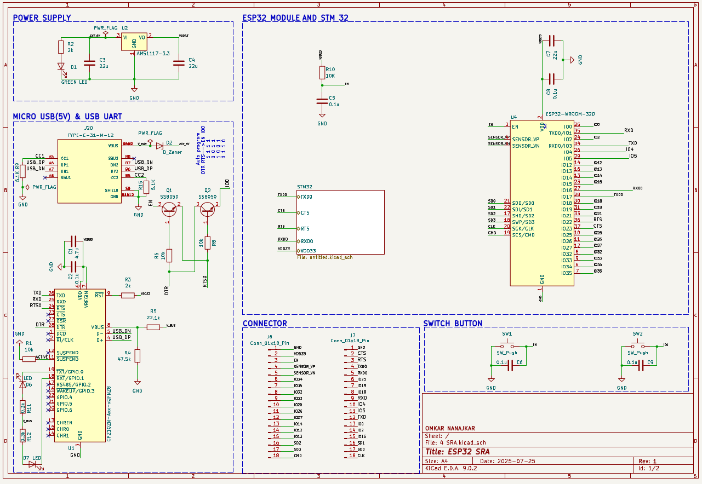
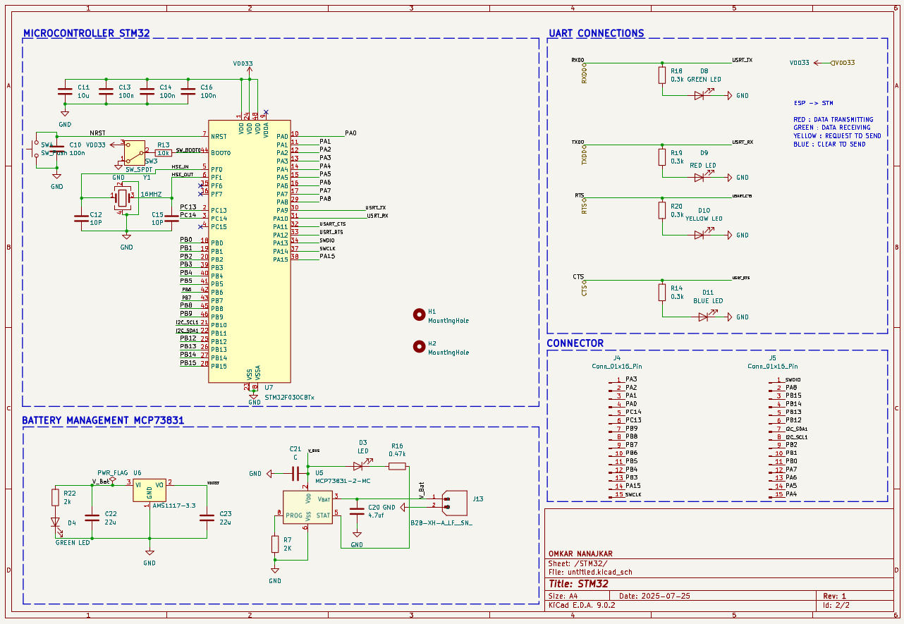
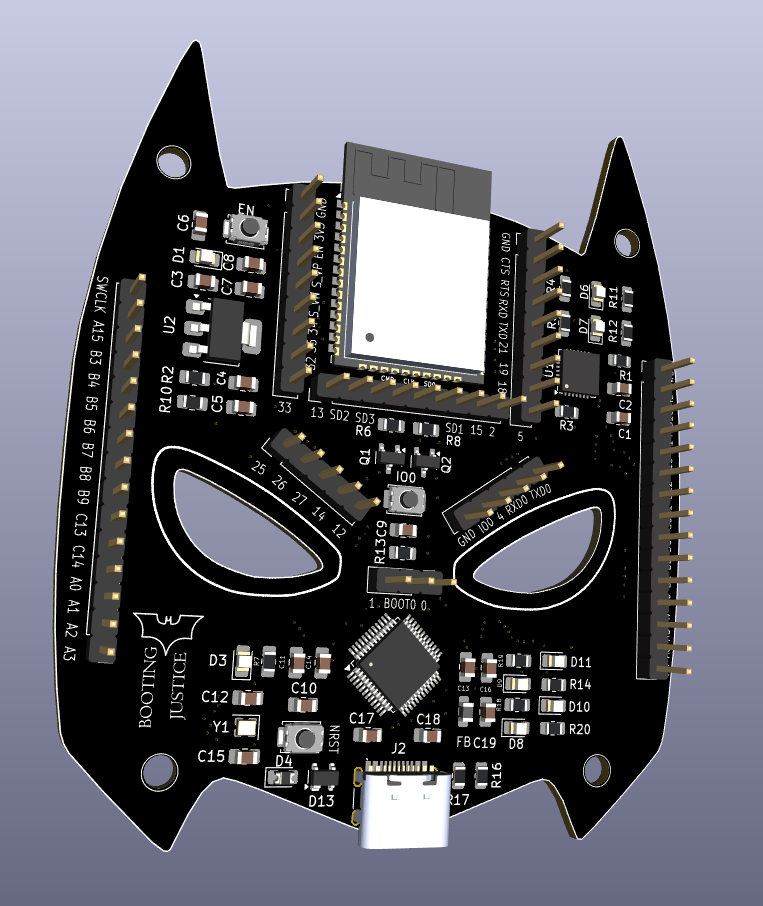
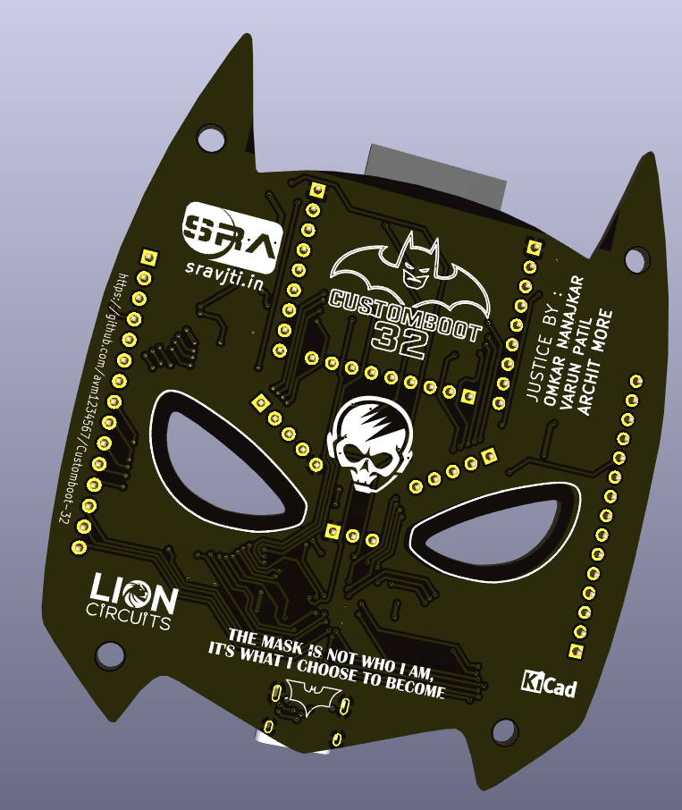

CustomBoot-32

Progress Report (Weeks 1–2)
During the first week of Eklavya, our focus was mainly on completing the prerequisites of the project, as we did not yet have access to the hardware. Most of this time was dedicated to brainstorming with the resources provided by our mentors. We referred to this playlist, which explained the entire workflow of PCB design using KiCad. Additionally, we studied this video, which gave us insights into how real development boards, such as the STM32 Blue Pill, are designed in KiCad.
In the second week, we transitioned to working on the actual schematics of our custom PCB. For this, we carefully referred to the following documents and datasheets:


CustomBoot-32 schematic
Progress Report (Weeks 3–4)
OTA
Once we completed the schematic, we received the hardware components, including the ESP and STM Blue Pill. We decided to begin with the software aspect of our project, focusing on OTA firmware transfer from a laptop to the ESP. To facilitate firmware storage on the ESP, we created a custom partition table that divides the flash memory into multiple partitions. The final partition, labeled "storage", is dedicated to the file system. We chose SPIFFS for this purpose because it is lightweight, easy to use, and ideal for small-scale file management on resource-constrained devices.
For the file upload interface, we made an index.html page that provides a simple form for uploading two firmware files. The ESP code performs several key functions: it connects to Wi-Fi, initializes SPIFFS on the storage partition, hosts the web interface on the assigned IP address, and handles the reception of binary files uploaded via the website.
UART
UART communication between ESP and STM is the second important target after OTA in our project. Initially, we tried to establish communication between ESP and STM, but it did not work. So we tested the UART interfaces of ESP and STM individually using a loopback test. Then we established duplex UART communication between both boards. All the code is provided below:
Simple Bootloader
Before creating the final bootloader, we tested a simple bootloader that checks the state of the PA0 pin and accordingly switches between two applications residing at two different starting addresses. Refer to this repository for the full code and test applications. Make sure you read the applications’ vector offsets and flash them to their respective start addresses.
Progress Report (Weeks 5–6)
Binary file transfer from ESP to STM using File Protocol
During weeks 3–4, we successfully tested and established UART communication between the ESP and the STM. Our next objective was to transfer binary files from the ESP’s SPIFFS to the STM’s flash memory. To accomplish this, we designed a Custom File Protocol. Although we reviewed several existing file transfer protocols, we opted to develop our own in order to gain finer control over how data is transmitted via UART. For additional details, refer to our Notion notes on this topic.
Our custom chunk structure (file protocol):
[START (1 byte)] [LENGTH (2 bytes)] [DATA (512 bytes)] [CRC32 (4 bytes)] [END (1 byte)]
Default Application
To ensure system reliability, we reserved space in flash memory for a default application located below the main firmware. This application is a simple rapid LED blink program. Its purpose is to act as a fallback in case the user forgets to upload firmware to the ESP via OTA and directly requests the ESP to forward firmware to the STM. In such a scenario, the ESP has nothing valid to transmit, and the system could otherwise enter a hang state. To prevent this, the ESP instead sends a fail-safe chunk to the STM. The STM’s bootloader validates this chunk and, upon detection, executes the default application—providing a clear visual indication to the user that something went wrong.
CRC32
CRC32 (Cyclic Redundancy Check 32-bit) is an error-detecting code commonly used to verify data integrity in digital communications and storage.
On the STM side, hardware CRC32 registers are available. When a 32-bit word is fed into the CRC32 register, it produces a checksum value. If another 32-bit word is subsequently provided without resetting the register, the checksum accumulates across both values. Using this mechanism, we feed the entire 512-byte chunk received from the ESP word by word. At the end of this process, the STM generates the CRC32 checksum for the entire chunk. Refer to this section of the bootloader for the exact implementation.
On the ESP side, hardware CRC32 is not available. Therefore, we implemented a software-based CRC32 calculation, which replicates the same operations performed by the STM’s hardware. You can find the complete implementation here.
As specified in our file protocol, the 4 bytes following the data field are reserved for the CRC32 value, which is transmitted from the ESP to the STM. The STM compares its computed checksum with the received one, and only if both values match does it send an acknowledgement string to the ESP, prompting the transfer of the next chunk.
LibOpenCM3
Our STM32F103C8T6 has only 64 KB of flash memory, making it essential for the bootloader to be highly optimized for size. The earlier version of our bootloader was written entirely using HAL libraries, which added unnecessary bloat, introduced slower execution, and caused the bootloader size to exceed 15 KB—about 25% of the total flash space!
To address this, we migrated the entire codebase from HAL to LibOpenCM3, which provides direct access to register-level operations while maintaining good code readability. This shift eliminated the HAL overhead, significantly reducing both size and complexity.
You can explore our LibOpenCM3-based bootloader here. Remarkably, this version of the bootloader is under 2 KB, representing a massive improvement in efficiency.
For a more detailed explanation, refer to our Notion notes on LibOpenCM3.
Progress Report (Weeks 7–8)
Perfboard Testing
Our firmware is now complete, and the schematic has also been finalized. The next step was to test the circuit on a perfboard to verify its functionality. During this process, we discovered several errors in the schematic.
Issues Identified
STM32 Powering Issue
When we first soldered the SoC onto the breakout board, it failed to connect to the STM32 CubeProgrammer.
After troubleshooting, we realized that we had not provided power to VDDA and VSSA pins, assuming they were unnecessary since we were not using any analog features. In reality, these pins are essential for proper powering of the STM32, and their omission caused the device to power up incorrectly.
ESP UART1 Pin Mapping
We also identified a mistake in the UART1 configuration of the ESP module, where the wrong GPIO pins had been assigned. After correcting this, communication was established successfully.
Successful Testing
After fixing these issues, we tested our previously written code on the perfboard-based circuit, and it worked flawlessly.
PCB Routing and Gerber File Generation
Another major step in preparing our PCB for fabrication was routing the board and generating the Gerber files. To ensure compatibility with the manufacturer, we referred to the hardware design constraints specified on the LionCircuits official website.
Additionally, we integrated 3D component models into our KiCad project, which allowed us to review the board in 3D visualization mode. This step was particularly useful for verifying component placement, orientation, and overall mechanical fit before moving forward with fabrication.


Front and back views of the routed PCB